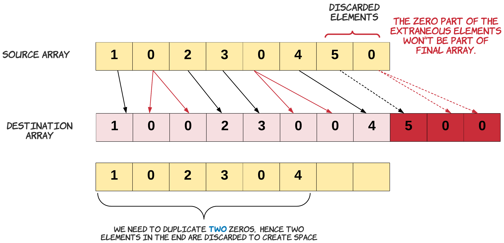

Solution
The problem demands the array to be modified in-place. If in-place was not a constraint we might
have just copied the elements from a source array to a destination array.

Notice, how we copied zero twice.
s = 0
d = 0
# Copy is performed until the destination array is full.
for s in range(N):
if source[s] == 0:
# Copy zero twice.
destination[d] = 0
d += 1
destination[d] = 0
else:
destination[d] = source[s]
d += 1
The problem statement also mentions that we do not grow the new array, rather we just trim it to its original array length. This means we have to discard some elements from the end of the array. These are the elements whose new indices are beyond the length of the original array.

Let's remind ourselves about the problem constraint that we are given. Since we can't use extra space, our source and destination array is essentially the same. We just can't go about copying the source into destination array the same way. If we do that we would lose some elements. Since, we would be overwriting the array.

Keeping this in mind, in the approach below we start copying to the end of the array.
Approach 1: Two pass, O(1) space
Intuition
If we know the number of elements which would be discarded from the end of the array, we can copy the rest. How do we find out how many elements would be discarded in the end? The number would be equal to the number of extra zeros which would be added to the array. The extra zero would create space for itself by pushing out an element from the end of the array.
Once we know how many elements from the original array would be part of the final array, we can just start copying from the end. Copying from the end ensures we don't lose any element since, the last few extraneous elements can be overwritten.
Algorithm
-
Find the number of zeros which would be duplicated. Let's call it
possible_dups. We do need to make sure we are not counting the zeros which would be trimmed off. Since, the discarded zeros won't be part of the final array. The count ofpossible_dupswould give us the number of elements to be trimmed off the original array. Hence at any point,length_ - possible_dupsis the number of elements which would be included in the final array.
Note: In the diagram above we just show source and destination array for understanding purpose. We will be doing these operations only on one array. -
Handle the edge case for a zero present on the boundary of the leftover elements.
Let's talk about the edge case of this problem. We need to be extra careful when we are duplicating the zeros in the leftover array. This care should be taken for the
zerowhich is lying on the boundary. Since, this zero might be counted as with possible duplicates, or may be just got included in the left over when there was no space left to accommodate its duplicate. If it is part of thepossible_dupswe would want to duplicate it otherwise we don't.An example of the edge case is - [8,4,5,0,0,0,0,7]. In this array there is space to accommodate the duplicates of first and second occurrences of zero. But we don't have enough space for the duplicate of the third occurrence of zero. Hence when we are copying we need to make sure for the third occurrence we don't copy twice. Result = [8,4,5,0,
0,0,0,0] -
Iterate the array from the end and copy a non-zero element once and zero element twice. When we say we discard the extraneous elements, it simply means we start from the left of the extraneous elements and start overwriting them with new values, eventually right shifting the left over elements and creating space for all the duplicated elements in the array.

Complexity Analysis
-
Time Complexity: , where is the number of elements in the array. We do two passes through the array, one to find the number of
possible_dupsand the other to copy the elements. In the worst case we might be iterating the entire array, when there are less or no zeros in the array. -
Space Complexity: . We do not use any extra space.